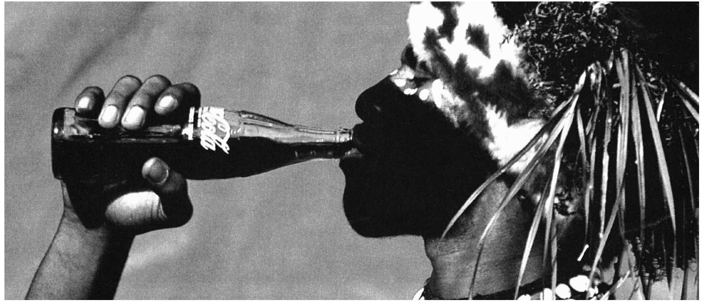

在欧洲人15世纪偶然发现的美洲大陆的那边，是浩瀚的太平洋王国，名为大洋洲，又名波利尼西亚，意为“众多的岛屿”。从美洲的西海岸到亚洲大陆，太平洋绵延几千英里。太平洋王国离欧洲大陆最远，因此，欧洲人在他们发现更容易到达的美洲和非洲大陆之后很久才知道这里。
欧洲人之所以长久以来对波利尼西亚一无所知，不仅因为它远在世界的那一边，还因为它缺少像其他地区那样能吸引欧洲人的丰富物产。在太平洋上，没有地方能孕育出像美索不达米亚、埃及、印度和中国这样伟大文明的广阔草原和富饶河谷。相反，太平洋世界是一个浩瀚的大洋，星罗棋布地点缀着上万座小岛。这些零星分散的岛屿非常小，如果不把新几内亚和新西兰两个大岛计算在内，所有小岛加在一起的总面积只略大于英格兰或纽约州。
太平洋诸岛尽管缺乏欧亚大陆的丰富资源，但确实也出产一些作物；据澳大利亚一位权威人士说，这些作物能使土著居民“比他们那些赚钱谋生、以罐头食品为主食的后代生活得更好”[1]。
这里主要出产的是两种乔木作物和两种根用作物。乔木作物是椰子和面包果。没有椰子，许多小岛上居民的生活几乎无法维持；直到今天，岛上居民仍然每天至少食用五个椰子。这些椰子既当食物，又作饮料；同时，椰子树树干可用作建造房屋、制造木船和渔叉的木材；同样，椰树叶可用作茅草盖屋顶，制成扇子和席子。同样重要的作物还有面包果；一棵丰产的面包果树每年能结大约150个、每个重达2—5公斤的大果实。这些果实可烤着吃，也可在地窖里发酵后制成面团，这种面团能保存数月之久。

图238 西方跨国公司的扩张改变了全世界的消费模式，破坏了无数传统生活方式。
根用作物是薯蓣和芋头。薯蓣是一种淀粉块茎，通常有30磅或更重些；它可煮着吃、烤着吃，可以磨成粉。芋头也是一种淀粉块茎，可做蔬菜、布丁，也可磨成粉。值得一提的还有香蕉，不论野生香蕉还是种植的香蕉，都是一些岛上的主要食物。
这些食物是殖民者带到这些零星的岛上的；出于人口的压力，他们扬帆出海，跨越太平洋，从南亚来到这里。到公元前1100年至前1000年时，他们居住在汤加——萨摩亚地区；而到公元300年时，他们已到达了马克萨斯群岛；一两个世纪以后，他们已航行到北达夏威夷、东距南美洲海岸2000英里的地方。在那里的复活节岛上，他们竖起了奇特的巨石人像；这些人像的高度从30英尺到50英尺不等。这些勇猛的“太平洋维京人”——他们被其他人这么称呼——向南最远到达了新西兰；他们是公元800年到达那里的。尽管所殖民的地域广阔，太平洋的殖民者还是保持了令人印象深刻的文化同质性。伟大的探险家詹姆斯·库克惊异地发现：18世纪，他的部下在夏威夷竟然能用与遥远南方的新西兰一样的语言与当地人进行贸易。